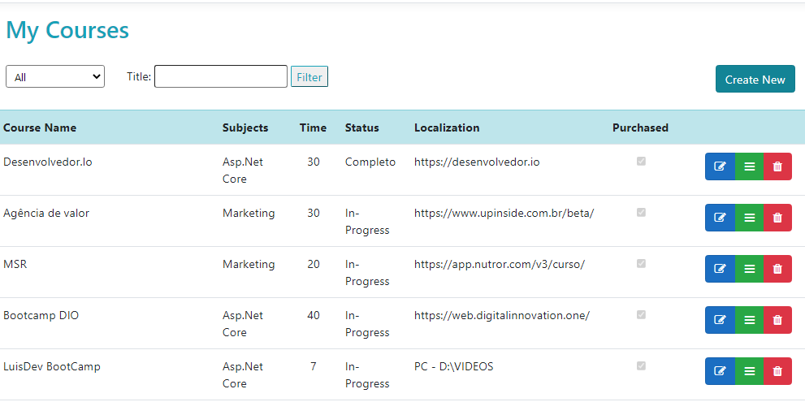
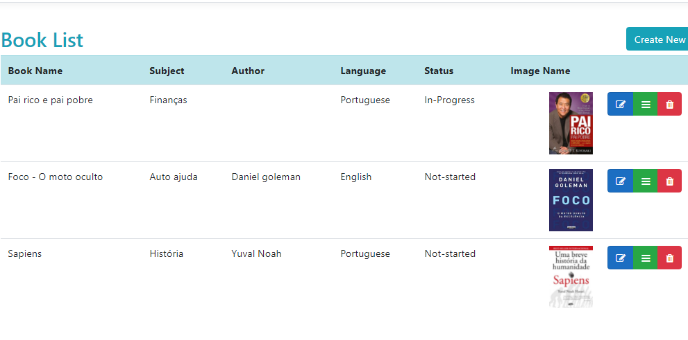

Personal project - Task Organizer
Project description
The Task-O was developed by Leonardo Ferreira with the intention of practicing the creation of information recording systems. It is an application developed to manage learning, linking courses and desired books, making the study journey more organized. The System is developed in C# language, using the ASP.NET Core framework created by Microsoft. Still looking for improvements, the developer will continue to add new utilities to the system. The web system uses the MVC design pattern to decouple the user interface (View), data (Model) and logic from the application (Controller). This pattern helps to achieve separation of interests. In addition, the bank of data has been integrated with the powerful ORM (Object-Relational Mappers) EntityFramework to aid in productivity.
With this system, it is possible for the user to create, edit, delete and view registry details with good performance and responsive screens.
In addition, it is possible for the user to attach the image of the book he wants to study.
The main objective of the project is to practice the concepts studied, applying ideas and generating improvements.
← Back to Portfolio Page